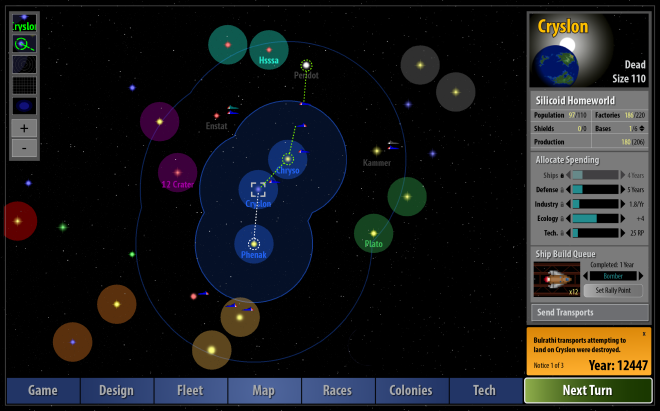
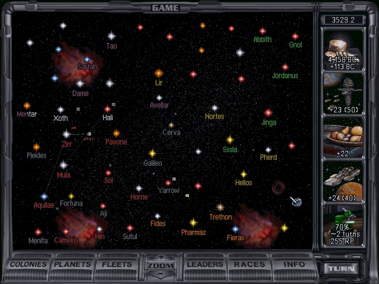

So Sonko started a new project. Following suit, I jumped back in time to already have a game project on-going for quite some time now. A bad habit of mine is to reach some milestone and then "pause" (drop) the project. But now I'll return to it, and as a small incentive to keep on it, I'll start this blog.
As with Sonko, this means my StarCraft AI related projects are on hold (don't worry, the basil ladder will keep running).
Also, on a rather technical note: I dropped Jekyll as a static site generator and moved to zola. Every Jekyll upgrade wasted a lot of time to get it running again. Zola is just one binary, and it should run fine on github actions as well.
🔗Introduction
I played Master of Orion 2 (MOO for now) a lot when I was younger. Even back then I tried to create my own clone of the game. But the scale of the game was a bit to much for me back then - maybe even today.
But not all thing were good. It irked me a bit how much the game slowed down in the later phases due to the massive amount of micro-management.
Fast forward some 30 years and some more MOO games. I always was a fan of easy to learn hard to master games. Almost none of the games inspired by it (or being successor to) seem to do that. They just upped the complexity.
Perfection is achieved, not when there is nothing more to add, but when there is nothing left to take away.
- Antoine de Saint-Exupéry, Airman's Odyssey

Remnants of the Precursors (ROTPR for now) has a simple interface. Maybe even a bit to bland. But it gets the job done. I did not really play the original Master of Orion, I was still wasting enjoying my time with Civilization.
I do like the simpler colony management, which avoids going through every colony in the mid-late game. Spying is a bit strange, it is not really obvious what multiple networks and/or high spendings are doing.
 Master of Orion 2 (not 1) is a bit different, more complex in some aspects (colony management) and less so in others (less diplomacy/spying).
The UI is a bit dated, and looks only good when shrunk down. Still looks nice though.
🔗Designing My Game
My game already has quite a lot of code, but barely anything to show. I decided to create the game abstraction in code as a first step. This was a mistake in my opinion. While its clear that the inner game model should be sound, only testing it via unit tests is rather dull.
It currently covers the basics of building ships and colonizing other systems. Like any software architecture, it is best to delay the choices which "cost" the most - as long as possible. This might sound unintuitive, but help not wasting a huge amount of time due to some bad "large" initial decisions.
Although I got some basics covered, I want to explore design space a bit further before continuing/refactoring.
I know a few things I want in the game design:
- Colonization should be per star system (like ROTPR). Colonizing individual planets really takes its toll on usability. Multiple different factions owning each a planet in a system? A separate UI for planets in a system? It just makes things more tedious.
- Research based on a RPG like skill tree. Even ROTPR, which tries to make research meaningful succumbs to the "unimportant research item" problem.
Tech items above are just examples (for some I don't have an idea on what they do), I do want to make it unconventional - yet useful. Every tech has 3 upgrades which will improve on the previous state in one way or the other.
Ideas for unconventional techs:
- Fanatics - For every upgrade, establish a colony on any unoccupied star system
- Boost - Increase productivity of a single colony for a short while
Ideas for more conventional techs:
- XYZ Armor - Unlocks a type of armor, further upgrades improve efficiency
- XYZ Weapons - Unlocks a type of weapon, further upgrades improve efficiency
- Productive - Increases productivity per upgrade level
Now the real change comes with the way you unlock techs. Usually, you designate a research topic and after some turns you'll get it. This is not the case here.
Instead, you build up research points - and once you have enough you can immediately unlock or upgrade a tech. This allows for fast reaction to new circumstances. There are also only a very limited amount of techs to unlock. With either, MOO2 or ROTPR I always feel like the actual decision of what to research matters little. Yes, some do - but you can always replace them later with something else. I want the player to be able to focus on a certain play style, stick to it, but still be able to win.
That's all for today!
Next Time: Gameplay Loop